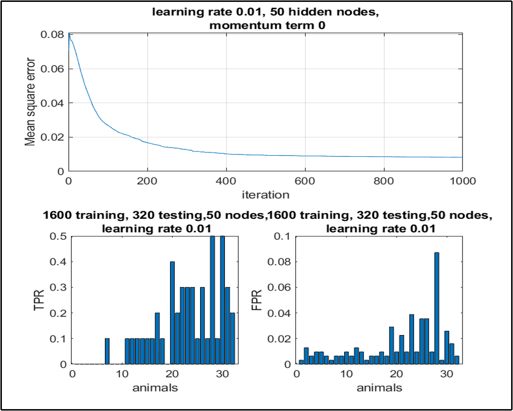

Building intelligent vision and data-driven systems.
I’m Anurag, a computer engineer with experience across computer vision, AI/ML, and full-stack development.
I enjoy turning messy real-world data into robust, scalable systems — from hazard detection in construction
sites to large-scale analytics and automation.
Introducing My Research Journey at the UD Vision Lab: Advancing Object Detection and Computer Vision.
Skills
AI / ML
Neural Networks, CNNs, GANs/SRGAN
Object detection, segmentation, anomaly detection
Model evaluation (mAP, PSNR, SSIM, ROC)
Computer Vision
YOLOv8, SAM, DINOv2, OpenCV
Image enhancement, low-light, deblurring
Feature extraction: HOG, SIFT, LBP, Harris
Software & Data
Python, Java, C++, MATLAB, SQL
J2EE, REST APIs, CI/CD (Jenkins, Git)
Hive, Spark, MapReduce, ETL pipelines
Tools & Platforms
Linux, CUDA (basic), Docker (basic)
Jupyter, VS Code, IntelliJ
Agile / SAFe collaboration
Experience
Graduate Assistant — UD Vision Lab
May 2023 – Dec 2025 · Dayton, OH
Designing deep vision systems for traffic behavior analysis and hazardous object detection.
Worked on YOLOv8-based detection, Kalman tracking, low-light enhancement, and safety-critical
anomaly detection in construction sites.
Computer VisionYOLOv8Kalman FilterPythonNSF-funded research
System Engineer — Tata Consultancy Services
Sep 2019 – Dec 2021 · Kolkata, India
Modernized enterprise insurance platform in J2EE + Oracle, cutting average query response time by 40%
and eliminating 95% of system crashes. Integrated 100+ user stories into automated CI/CD pipelines and
collaborated across 4 Agile teams to deliver 6 major feature releases on time.
Java / J2EESQLCI/CDSystem Design
Education
University of Dayton — M.S. Computer Engineering (2022–2024)
Focus on computer vision, deep learning, and image processing. Thesis on deep vision-based driving
behavior analysis for roadside restricted area traffic control.
Created the DAVIS dataset to support vehicle detection and behavior analysis research at the UD Vision Lab.
This dataset provides training data for YOLO-based object detection systems in roadside restricted-area monitoring.
Curated and annotated Dayton-area traffic footage with cars, trucks, buses, and pedestrians.
Generated high-quality YOLO-format bounding box labels for all object instances.
Captured real-world scenarios including occlusion, night scenes, motion blur, and variable angles.
Used extensively in our driving-behavior analysis system and trajectory prediction experiments.
Autonomous Hazard Detection in Construction Sites (NSF Funded)
Computer Vision · Safety · Real-time
Designed a modular pipeline using SAM segmentation + DINOv2 feature encoding and a 3-layer classifier to
detect unattended tools and equipment across 500+ real construction site images, achieving 92% bounding box
precision and 87% validation accuracy across 20 hazard classes.
Deep Vision Based Driving Behavior Analysis System
YOLOv8 · Kalman Tracking · Low-light Enhancement
Developed an automated traffic monitoring system to analyze driving behavior in roadside restricted zones,
processing 30 fps streams through YOLOv8. Improved low-light detection using R-CLAHE and forecasted
trajectories 3–5 seconds ahead with Kalman filters, reducing false alarms by 60%.
Implemented a classical pedestrian detection pipeline using Histogram of Oriented Gradients (HOG)
for feature extraction and a binary Support Vector Machine classifier. Processed 128×64 image patches,
generated 3,780-dimension feature vectors per window, and trained an SVM on positive/negative pedestrian
datasets, achieving 97.71% accuracy with low false-positive and false-negative rates.
HOGSVMMATLABFeature Extraction
MNIST Image Restoration using Hopfield Neural Network
Neural Networks · Noise Removal · Pattern Recall
Implemented a Hopfield-based associative memory system to restore corrupted MNIST digits.
Normalized and binarized images to ±1 states, constructed a recurrent weight matrix using Hebbian learning,
and iteratively updated neuron states using the signum activation rule. Successfully reconstructed
noisy inputs (5–25% salt-and-pepper noise) and achieved stable recall for orthogonal pattern sets
up to 82% noise levels.
Built an SRGAN model to enhance satellite image resolution by 4×, improving PSNR by 3.2 dB and SSIM by 0.15
over bicubic interpolation. Designed the full training pipeline from data preprocessing to evaluation.
SRGANPyTorchSatellite Imagery
IoT Smart Greenhouse Monitoring
IoT · Embedded Systems · Automation · Apr 2023
Deployed an IoT monitoring system using Arduino and ESP32 to collect sensor data every 30 seconds from
4 environmental parameters, triggering automated irrigation and climate control and reducing manual
monitoring by 90%.
Developed an animal image classification system using handcrafted feature extraction and neural
classification to distinguish between 32 animal species, targeting applications in wildlife
monitoring and livestock management.
Used a dataset of 32 animal classes (e.g., antelope, bear, elephant, tiger, wolf, zebra) with
50 training and 10 testing images per class (1600 train / 320 test images).
Extracted Local Binary Pattern (LBP) features from resized 64×128 grayscale images, followed by
Histogram of Oriented Gradients (HOG) for richer texture–shape descriptors.
Trained a Multilayer Perceptron (MLP) with 3780 input features, 50 hidden units, and 32 output
neurons to classify species based on the combined feature representation.
Evaluated performance using true positive and false positive rates per class, visualized via
comparative bar graphs to analyze strengths and confusion across species.

TPR vs FPR
LBPHOGMLPImage ClassificationMATLAB / Python
E-TransInfo: Public Transport Scheduling System
Android · Firebase · Real-time
Launched an Android app with 500+ downloads for real-time bus tracking and schedule visualization, reducing
average commuter wait time by 12 minutes based on a 200-user survey.
AndroidFirebaseMaps / Realtime
Aviation Data Analysis Project
Big Data · Spark · Hive · MapReduce
Designed a scalable big-data analytics pipeline using Apache Hive, Spark, and MapReduce to process
100,000+ Indian aviation records on a Cloudera Hadoop cluster, enabling insights into national
flight traffic patterns and operational performance.
Built end-to-end ETL pipeline using HiveQL joins across 5+ dimensional tables
(flights, airports, carriers, delays, passengers) to extract actionable aviation intelligence.
Implemented Spark SQL aggregations and MapReduce jobs to analyze the top 15 busiest
domestic destinations, passenger load factor distribution, and delay patterns by route, carrier,
and time-of-day.
Identified that 23% of flights experienced more than 30-minute delays during Indian peak travel hours.
Optimized Hive performance using table partitioning and MapReduce job tuning, reducing average
query runtime from 45s to 12s (73% improvement) on multi-terabyte datasets within
the Hadoop cluster.
SparkHiveMapReduceHadoopBig Data AnalyticsCloudera
Contact
I’m actively looking for full-time opportunities in AI/ML, computer vision, and software engineering.
If you think I might be a good fit for your team, feel free to reach out.